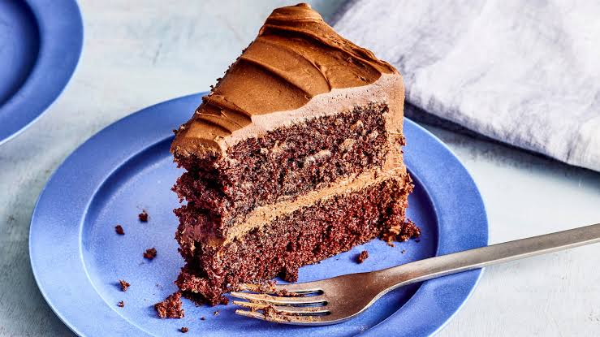

Home
Lasagna

Chocolate Cake
Com banana, mel, farinha integral e cacau, este bolo de chocolate saudável é uma alternativa aos bolos caseiros tradicionais.
Uma receita simples, com uma textura fofa e um sabor intenso a chocolate. Experimente.
Ingredients
- 3 unid. ovo
- 100 g mel
- 100 ml óleo de coco
- 150 g farinha integral
- 40 g cacau em pó sem açúcar
- 1 c. de chá fermento em pó
- 1 unid. banana madura
- 1 c. de chá essência de baunilha
Steps
- Pré-aqueça o forno a 180 ºC e unte uma forma de bolo.
- Bata os ovos com o mel até ficar espumoso.
- Junte o óleo de coco, a banana esmagada e a baunilha. Misture bem.
- Peneire a farinha, o cacau e o fermento e envolva com movimentos suaves.
- Deite a massa na forma e alise a superfície. Leve ao forno durante 35 minutos, até um palito sair limpo.
- Deixe arrefecer na forma por 10 minutos antes de desenformar.